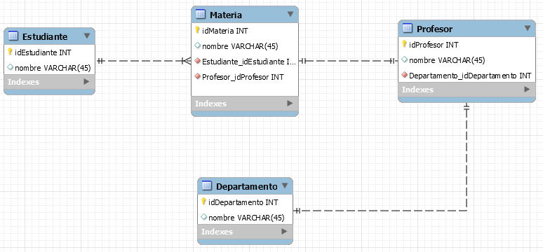

Created by Andy Bravo
¿Porqué estoy aquí?
Para aprender MySQL
Un gestor de base de datos
My -> Maria (Nombre de la hija del creador)
SQL -> SQL
Relacional, es decir, que tiene conexiones con otras tablas para formar entidades complejas de información
Es un lenguaje de programación usado para la
Inventado en 1970 por Edgar Frank Codd
Oiga profe qué necesito saber para usar SQL?
álgebra relacional
cálculo relacional y teoría de conjuntos
Base de datos
create database mibase;
use mibase;CREATE TABLE saludos (
id INT(6) UNSIGNED AUTO_INCREMENT PRIMARY KEY,
texto VARCHAR(30) NOT NULL
);
INSERT INTO saludos (texto) VALUES ('Hola');SELECT texto FROM saludos;Acordeón
--SELECTS
SELECT columna1, columna2, ..., columnaN FROM tabla1, tabla2, ... tablaN WHERE condicion1 AND/OR condicion2
--Inserts
INSERT INTO tabla (columna1, columna2, ..., columnaN) VALUES (valor1, valor2, ..., valorN)
Cree la siguiente tabla:
CREATE TABLE personas (
id INT(6) UNSIGNED AUTO_INCREMENT PRIMARY KEY,
nombre VARCHAR(30) NOT NULL
)Inserte cinco nombres diferentes en la tabla personas.
Salude a cada una de las personas.
| texto | nombre |
|---|---|
| Hola | Andy |
| Hola | Andres |
Inserte el siguiente registro en la tabla saludos
INSERT INTO saludos (texto) VALUES ('Hello')Como somos bilingües, salude en inglés (solo en inglés) a todas las personas